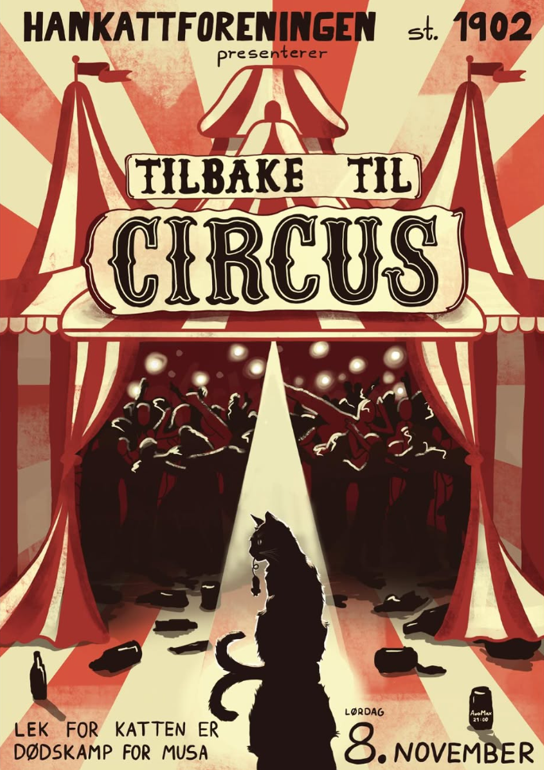

123. Kulturelle år
§På de skrå bredder: Over et halvt århundre med cabarét- og revyhistorie
Hankattforeningen st. 1902 var først ute i den epoken som ennå lever av populære cabarétformer på Samfunnsscenene.
Vinteren 70. k.å. skrev undertegnede, og ”satte opp”, ”Sten Stensens forunderlige reise..” en dramaturgisk én-akter basert på vill fantasi rundt skøyteløperen Sten Stensen, i fri utgave, og med ville kaskader av hurrarop fra en mer enn fullsatt sal.
Dette var ikke å betrakte som en tradisjonell revy eller cabarét, men potensialet for utfoldelse var mer enn bevist.
(Jeg har kun intuisjonen å stole på, og jeg har aldri spurt Lornts Mørkved om saken, men jeg tror kanskje at han stiftet Sankoret Lærken ut fra inspirasjon fra ovenstående seanse….)
Jeg kan ikke verifisere det, men jeg tror, kanskje noe patriotisk spesielt ut fra dette Hankattdokument, at vi var først ute også med cabarét (”Rumpen bar” eller ”Døgnfluen”?). Lærken må ha meg unnskyldt om jeg tar feil, men skal æres ved at nettopp de fulgte opp. Etter hvert kom også Hunkattene og PB med, vi får si, på laget.
Det gleder en gammel Hankatt at tradisjonen holdes ved like, selv om formen etter hvert er modernisert, naturlig nok. Jeg tror kanskje at vi hadde mindre musikk og mer av humortekster, som sketsjer og monologer, i innholdet.
Formen var mer…burlesk enn elegant. Det mer elegante overlot vi til Studentrevyen. Ingen ideer var tabu, ut fra den interne, litt private rammen cabaréene fikk. Dermed ble humoren ”mangslungen”, alle virkemidler ble tatt i bruk, som da Generalsekretær Bjørgum, nå i n’te potens, potent stupte fra ”2. avsats” tvers gjennom scenegulvet, tildekket med papp, og med overlegg traff den åpne gulvluke til brøl av overraskelse og medlidenhet fra publikum. Han landet på omhyggelig plasserte madrasser i ”underetasjen” og dukket smilende og triumferende opp igjen sekunder etter, til allmenn lettelse, selvsagt.
Tillat en etter hvert tilårskommen Hankatt å romantisere den akk så frie studenttid på Ås, der det sosiale ble satt i høysetet. Dette var undertegnedes fødsel, grotid, for også senere utfoldelse på de skrå bredder. På Ås, i studentmiljøet, ble jeg ”gjengs” menneske.
Har mange sagt.
Takk!
Til revyoversiktenMange av foreningens revyer mangler foreløpig i denne oversikten. De vil bli lagt til etter hvert som informasjon om dem blir gjenoppdaget.

123. Kulturelle år
§115. Kulturelle år
§98. Kulturelle år
§97. Kulturelle år
§”Rumpehumoren var en gjenganger. Som vanlig. Men alle som går på Hankattrevy forventer det også. Forventer de seg egentlig noe annet?” Tuntreet
96. Kulturelle år
§Scene: En TV-kveld
95. Kulturelle år
§94. Kulturelle år
§93. Kulturelle år
§Bare to sketsjer fra fjellet, men mange om fyll.
92. Kulturelle år
§Flyttet tilbake til Festsalen. Scene: i baren på Finlandsferga
”Dette er en av de tragedier (Estonia) som ikke bør brukes i underholdningssammenheng” ØB
91. Kulturelle år
§”Nachspiel” fremføres for første gang
”Gutta hadde ståpikk” Tuntreet
90. Kulturelle år
§Jubileumsrevy. Halve revyen besto av nummer fra 84-89 k.å.
”Humor til ettertanke” Tuntreet
89. Kulturelle år
§Tema: ingen grenser! (Benkow myrder kong Olav, etc.)
”Frekk og slagferdig” Tuntreet
88. Kulturelle år
§Scene: cafe
”Små gutter på stor scene” Tuntreet
87. Kulturelle år
§Første smårevy avholdt i Aud Max. Dette varte fram t.o.m 91. k.å.
86. Kulturelle år
§Trolig tidenes lengste Hankattrevy
”Hankattene var stadig frampå med spenstige finter og kjappe slag med kloa” Tuntreet
85. Kulturelle år
§Alene igjen!!
”Hankattene sjokkerte med drivende god revy” ØB
84. Kulturelle år
§”Gode poenger i musikalsk revy” Tuntreet
83. Kulturelle år
§”Ingen topper for Fallås” Tuntreet
82. Kulturelle år
§81. Kulturelle år
§80. Kulturelle år
§Inneholder klassikeren ”Transvestitten Tei” (ingen lo)
79. Kulturelle år
§Sammen med PB. Dette varte fram t.o.m. 84. k.å.
”Avslutningssangen gikk i alle tonehøyder og –daler” Tuntreet
78. Kulturelle år
§Livshistorien til den mislykkede aborten Geir
”Det må ha vært hardt for de i salen som har hatt personlig erfaring med en abort å se en slik billig og flåsete harselas med en så alvorlig sak” Tuntreet
75. Kulturelle år
§74. Kulturelle år
§Scene: gatemiljø med blant annet ”Harem Brunstlands Hospits”
73. Kulturelle år
§Scene: dekadent steinaldermiljø
”.. i elskhugscena med Steinkåt og Gneissfrid, var det berre Gneissfrid som viste fram kjønnslege attributtar. Enn om Steinkåt hadde vist fram nokre av sine. Ein rumpeball hadde vore nok.” Tuntreet.
72. Kulturelle år
§Scene: restaurant (varianten er senere gjentatt flere ganger)
71. Kulturelle år
§Lattermusklene hadde vært flittig i bruk, armene også. (Tuntreet)
70. Kulturelle år
§Første smårevy på Ås!